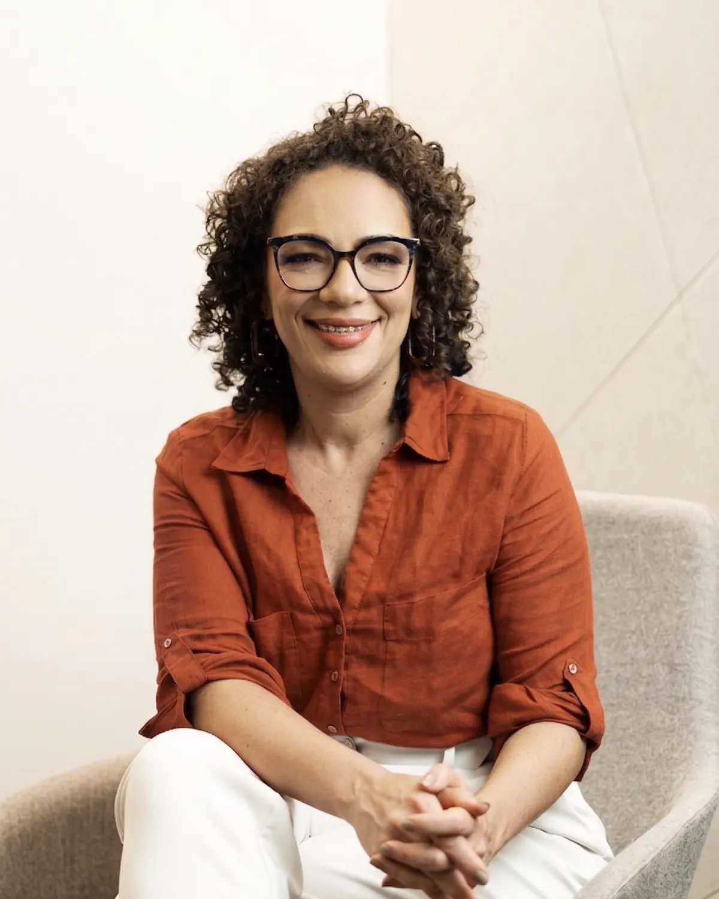

Fotos
Imagens para uso editorial.
As versões abaixo são de baixa resolução, para consulta. Os arquivos em alta, com crédito e autorização de uso, são enviados por WhatsApp ou e-mail a pedido.
Biografia em três tamanhos, credenciais para checagem, temas que comento com base em prática clínica, fotos e o histórico de entrevistas. Pedidos de pauta são respondidos em até 48 horas úteis.

Prazo de resposta
Até 48 horas úteis
Fotos em alta resolução e gravações são enviadas sob solicitação.
Médica do trabalho, autora de Quando o Trabalho Dói e pesquisadora de Lesão Moral Ocupacional no Brasil.
Dra. Ana Paula Teixeira é médica do trabalho com quase trinta anos de prática clínica e corporativa em mineradoras, siderúrgicas, laboratórios, hospitais, empresas de comunicação e comércio. Autora de Quando o Trabalho Dói (Editora AssedioNet, 2025), indicado ao 7º Prêmio Ecos da Literatura. É membro da International Commission on Occupational Health (ICOH), da ABERGO e da ANAMT/AMB, e Board Member certificada pela Board Academy em 2024.
Dra. Ana Paula Teixeira é médica do trabalho com quase trinta anos de prática clínica e corporativa em mineradoras, siderúrgicas, laboratórios, hospitais, empresas de comunicação e comércio. Pesquisadora de Lesão Moral Ocupacional no Brasil, conduz no mestrado na Bahiana a tradução e validação da escala OMIS-R para o português brasileiro, um dos primeiros estudos do tema no país. É autora de Quando o Trabalho Dói: do adoecimento silencioso à cultura de bem-estar (Editora AssedioNet, 2025, 253 páginas), indicado ao 7º Prêmio Ecos da Literatura. Membro da International Commission on Occupational Health (ICOH), da ABERGO e da ANAMT/AMB, e Board Member certificada pela Board Academy em 2024. Leva a empresas, eventos setoriais e associações de classe uma leitura clínica dos temas que hoje chegam à mesa da gestão: NR-1 e fatores psicossociais, assédio moral, adoecimento por saúde mental, retorno ao trabalho e segurança psicológica. Já atendeu organizações como PetroRecôncavo, Alvopetro, ABRH-BA e ABRH Sergipe.
Dra. Ana Paula Teixeira, médica do trabalho.
Registro profissional: CRM-BA 12797 · RQE 7237 (Medicina do Trabalho).
Quando houver espaço para uma credencial só, a que sustenta a fala é médica do trabalho e autora de Quando o Trabalho Dói.
O registro é de medicina (CRM), não de psicologia (CRP). Ela é médica, não psicóloga.
A Escutaris é a empresa de saúde mental ocupacional da qual é sócia-fundadora. Em pauta jornalística, o nome que assina é o dela.
A pesquisa de Lesão Moral Ocupacional está em andamento no mestrado na Bahiana. Resultados ainda não foram publicados.
As versões abaixo são de baixa resolução, para consulta. Os arquivos em alta, com crédito e autorização de uso, são enviados por WhatsApp ou e-mail a pedido.
Título: Quando o Trabalho Dói: do adoecimento silencioso à cultura de bem-estar
Autora: Ana Paula Teixeira
Editora: AssedioNet · Ano: 2025 · Páginas: 253
Reconhecimento: indicado ao 7º Prêmio Ecos da Literatura
Exemplar para resenha e trechos autorizados para publicação são enviados a pedido.
Com essas três informações a resposta sai mais rápida, com a indicação de disponibilidade para entrevista ao vivo, gravada ou por escrito.